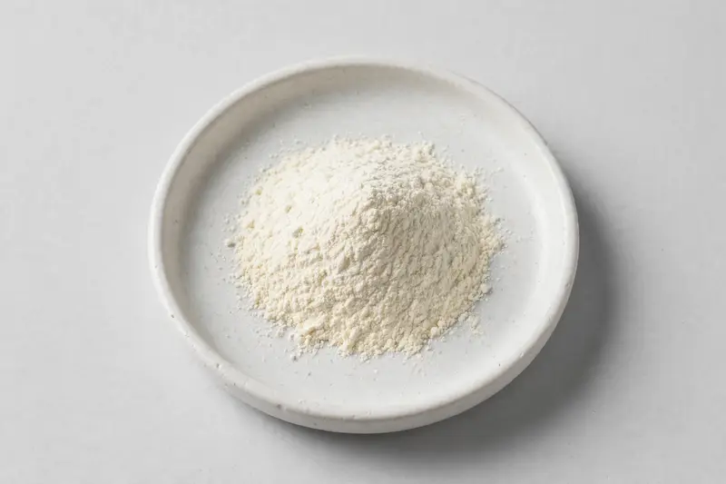

EGCG — a high-purity green tea catechin fraction for metabolic and antioxidant-oriented supplement formulations.

Overview
EGCG powder is a concentrated catechin fraction derived from Camellia sinensis leaf, standardized by HPLC to high marker content. Demand has grown steadily across capsule, stick-pack and functional beverage categories positioned around metabolic and antioxidant support. As a Xi'an-based trading company, we source through vetted partner producers, matching buyers' target assay, test method and carrier requirements before confirming feasibility.
Specifications below reflect commonly requested options in the market — not a stock list. Share your target spec and we'll confirm exactly what we can supply, honestly.
| Specification | Details |
|---|---|
| Botanical identity | EGCG (epigallocatechin gallate) powder from Camellia sinensis leaf |
| Marker compound | Commonly requested spec grades: 90%, 95%, 98% EGCG by HPLC; decaffeinated and low-caffeine grades also traded |
| Appearance | Fine powder, color typical of the extract |
| Mesh size | Typically 80–100 mesh (confirm per inquiry) |
| Testing | COA/TDS arranged on request; scope agreed per your spec |
Applications
Documentation
We don't claim in-house labs or certifications we don't hold. COA and TDS documents can be arranged on request, and testing scope is agreed against your specification before supply.
FAQ
Related products
Arctium lappa
Key marker: 10:1 or inulin
View specs →Camellia sinensis (white tea)
Key marker: Tea polyphenols 20-40%
View specs →Garcinia cambogia
Key marker: HCA 50-60%
View specs →Luteolin
Key marker: Luteolin 98% HPLC
View specs →Prunus africana
Key marker: Phytosterols 2.5-13%
View specs →Send your target spec and volumes — we'll respond with a tailored quotation.
Request a Quote